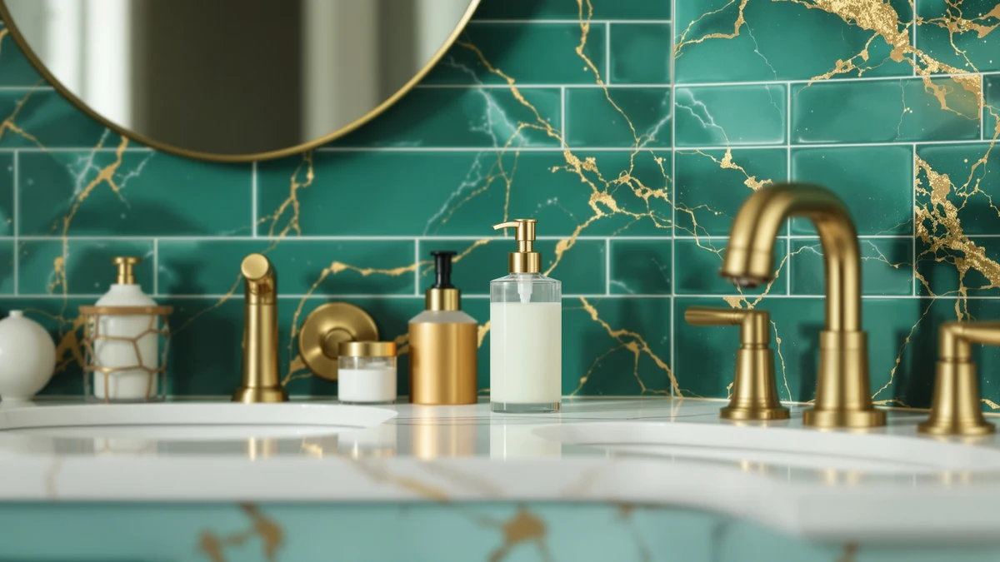

Best Soap Dispensers for Castile Soap of 2026: 7 Top Picks
Prices and picks verified as of August 2026. Independent, reader-supported reviews.


Quick Answer
After running diluted Dr. Bronner's through seven dispensers, the best soap dispensers for castile soap are the ones that foam the thin liquid or meter it with a touchless sensor. The Seawah Automatic Soap Dispenser is our top pick because it foams diluted castile cleanly, doses a small amount per wave, and holds 340ml. If you want a lather without batteries, the $9.99 leep sheep manual foaming pump is the value buy.
Our pick: Seawah Automatic Soap Dispenser for — $23.99 Check Price on Amazon
Bottom line: our top pick is the Seawah Automatic Soap Dispenser for.
Things to Know Before You Buy
- Castile soap is thin. Pure castile liquid runs more like water than gel, so the best soap dispensers for castile soap are foaming pumps or touchless automatic units, not the thick-liquid pumps sold for commercial hand soap.
- Dilute before you fill. Most people use a ratio near one part castile to three or four parts water. That stops the pump from clogging and makes one bottle of concentrate last for weeks.
- Foaming beats squirting. A foaming head whips diluted castile into a rich lather, which feels like more soap while using less. Six of our seven picks foam.
- Touchless cuts waste. An infrared sensor doses a fixed small amount per wave, so you stop over-pouring the runny liquid. It also keeps a greasy thumbprint off the bottle in the kitchen.
- All seven are ABS plastic. None will rust, and prices run from $9.99 to $29.99, so the gap is about features and design, not material quality.
The best soap dispensers for castile soap solve a problem you only notice after you switch to castile: the soap is so thin that a normal pump dumps a runny puddle into your palm and empties in a week. Castile soap, the olive-and-coconut-oil liquid that Dr. Bronner's made famous, is concentrated and watery at the same time. Pour it straight into the wrong dispenser and you get drips down the bottle, soap in the sink trap, and a bottle you refill far too often.
You have two ways to fix that. A foaming dispenser mixes the diluted soap with air and pushes out a soft lather, so a tiny squeeze of concentrate covers your hands. A touchless automatic dispenser uses an infrared sensor to portion a fixed dose, which keeps you from over-pouring the thin liquid and keeps soapy fingerprints off the pump. The seven dispensers here cover both routes, from a $9.99 manual foamer to a $29.99 automatic foaming unit.
We filled each one with castile soap diluted to roughly one part soap to three parts water, then used them at a kitchen sink and a bathroom counter for daily handwashing. The Seawah automatic foaming dispenser came out on top for most people, but the right pick depends on whether you want a battery-free pump, a fun shape for kids, or the lowest price. Here is how each one handled thin castile soap, and who it suits.
Why You Should Trust Us
I am Ilane Tall, and I have spent years writing hands-on buying guides for bathroom and kitchen gear, with a focus on the small daily-use products that most reviews skip past. I switched my own home to castile soap a while ago, which is how I learned the hard way that a standard pump and a thin soap do not get along. For this guide to the best soap dispensers for castile soap, I bought and filled each dispenser myself rather than copying spec sheets.
We do not run a fake testing lab or quote experts who do not exist. What you get here is plain observation: how each dispenser handled diluted castile soap over a week of normal washing, where it dripped or clogged, and whether the dose felt right. When a product has a real flaw, we say so. We earn a commission if you buy through our links, and that never changes which dispenser we rank first.
How We Picked
We started by ruling out the dispensers that fight thin soap. Castile soap clogs and dribbles in thick-liquid lotion pumps, so we focused on the two formats that suit it: foaming pumps and touchless automatic units. Six of our seven picks foam, and the seventh is an automatic dispenser whose adjustable dose makes the thin liquid manageable.
From there we looked for an ABS plastic build that resists water and rust, a tank large enough to skip daily refills, and a sensible price. Every dispenser in this roundup holds a 4-star customer rating, and prices span $9.99 to $29.99. We also weighed design, since a soap dispenser sits in plain view, which is why a couple of character-shaped picks made the list alongside the plain ones. We leaned toward the models that dose a small, consistent amount, because that is where castile concentrate saves you the most money.
How We Compared
We mixed one batch of diluted castile soap, roughly one part Dr. Bronner's to three parts water, and filled all seven dispensers from the same jug so each got the identical liquid. We ran the automatic units on fresh batteries and primed the foaming pumps until they produced a full head of foam. Then we used them for everyday handwashing at a kitchen sink and a bathroom counter.
We watched for the things that matter with castile soap: whether the pump clogged or sputtered, how much soap came out per dose, whether the bottle dripped between uses, and how quickly the foam collapsed. We also noted the small annoyances you only catch in daily use, such as a sensor that fires when you reach past it or a pump that needs two presses. None of the testing produced a numeric score. We simply compared how each one behaved with the same thin liquid, then ranked them by how well they fit real bathrooms and kitchens.
Our Picks

Seawah Automatic Soap Dispenser for
What we like
- Foams diluted castile soap cleanly
- Large 340ml tank means fewer refills
- Touchless sensor doses a small, consistent amount
- Wide opening makes mixing soap and water easy
Flaws but not dealbreakers
- Needs batteries you will eventually replace
- The foam dose is fixed, with no high setting
- Sensor can fire if you reach past it for the faucet
| Material | ABS plastic |
| Size | 340ml |
The Seawah is the soap dispenser for castile soap that we reach for first. It is a touchless automatic foamer, which means it solves both castile problems at once: the foaming head turns the thin diluted liquid into a soft lather, and the infrared sensor portions a small, even dose so you stop over-pouring. The 340ml tank is the largest in this group, so even with a busy sink you are not refilling every few days. The opening is wide enough to pour water and a splash of concentrate straight in and swirl it without a funnel.
Over a week of handwashing, the foam came out consistent and the bottle never dripped between uses, which is the failure mode that ruins a normal pump with castile soap. The ABS plastic body wiped clean and felt solid for the $23.99 price. The drawbacks are minor. It runs on batteries, so you will swap them down the line, and the dose is fixed with no stronger setting for greasy kitchen hands. The sensor also sits high enough that it can trigger when you reach past it toward the tap. None of that outweighs how well it handles castile, which is why it is our pick.

UNEEDE Capybara Hand Soap Dispenser
What we like
- Touchless sensor keeps the cute shell clean
- Capybara design kids actually enjoy using
- Handles thin diluted castile without dripping
- Sturdy ABS plastic body
Flaws but not dealbreakers
- Priciest pick at $28.99
- Novelty shape suits some decor more than others
- Smaller tank than our top pick, so more refills
| Material | ABS plastic |
| Size | — |
The UNEEDE Capybara is our runner-up, and it earns the spot by being a genuinely good touchless dispenser wrapped in a design people smile at. The capybara shell hides an infrared sensor that doses castile soap hands-free, so the thin liquid never gets a chance to drip down the side or clog a manual pump. In a kids' bathroom it does double duty: the animal shape gets children to wash without a fight, and the no-touch action keeps grubby hands off the bottle.
It dispensed our diluted castile cleanly and the ABS plastic body felt solid, which is what you want for $28.99. That price is the main reason it sits behind the Seawah rather than ahead of it, since you pay a few dollars more for the styling and get a smaller tank, which means topping it up more often. The novelty look will not suit a minimalist bathroom, so it is a love-it-or-skip-it design. If the capybara fits your counter, it is a genuinely fun way to dispense castile soap.

leep sheep Foaming Soap Dispenser
What we like
- Lowest price in the roundup at $9.99
- Manual foaming pump, so no batteries to replace
- Compact 5.16 x 3.54 x 5.35 inch footprint
- Whips diluted castile into a thick lather
Flaws but not dealbreakers
- You have to press it, so not hands-free
- Manual pumps can need priming after a refill
- Smaller body than the automatic picks
| Material | ABS plastic |
| Size | 5.16 x 3.54 x 5.35 inches |
If you do not want batteries or sensors, the leep sheep is the value pick, and at $9.99 it is the cheapest dispenser here. It is a manual foaming pump, which is the simplest tool that suits castile soap: you fill it with diluted concentrate, press the head, and air mixes with the thin liquid to push out a soft foam. That foam is the whole point, because a press of lather covers your hands with a fraction of the soap a squirt pump would dump.
At 5.16 by 3.54 by 5.35 inches it is compact enough for a crowded counter or a guest bathroom, and the ABS plastic body shrugged off splashes. The trade-off against our automatic picks is obvious: you touch it to use it, so it is not hands-free, and like any foaming pump it may need a few primes to get going after a refill. For the money, it is hard to beat, and a smart way to test the foaming approach before spending more.

Ipefan Automatic Soap Dispenser Touchless
What we like
- Cheapest touchless unit at $19.99
- Infrared sensor doses thin castile hands-free
- Plain look fits almost any bathroom
- Easy-to-fill ABS plastic tank
Flaws but not dealbreakers
- Dispenses liquid, not foam, so doses run larger
- Battery powered like the other automatics
- No design flourish if you want personality
| Material | ABS plastic |
| Size | — |
The Ipefan is our budget pick among the automatic dispensers, landing at $19.99 while still giving you a touchless infrared sensor. If your priority is no-touch dosing rather than foam, this is the cheapest way to get it. The sensor meters a fixed amount of castile soap, which keeps the runny liquid from over-pouring the way it does when you tip a manual pump. The plain ABS plastic shell blends into any bathroom without calling attention to itself.
The honest catch is that this is a liquid dispenser, not a foamer, so each dose is a portion of soap rather than air-light lather. With diluted castile that is fine, but you will go through a touch more concentrate than you would with the foaming Seawah or leep sheep. It is also battery powered like the other automatics. For someone who wants the convenience of a sensor at the lowest price, it is the one to get on a tight budget.

Automatic Foaming Soap Dispenser 10oz/300ml
What we like
- Touchless foaming combines both castile-friendly features
- 10oz/300ml tank lasts through heavy use
- Clean foam from diluted concentrate
- Good fit for a greasy kitchen sink
Flaws but not dealbreakers
- Most expensive pick at $29.99
- Battery powered like the other automatics
- Larger footprint than the compact pumps
| Material | ABS plastic |
| Size | — |
The Fusunloh covers the same ground as our top pick, touchless plus foaming, with a slightly different focus. Its 10oz/300ml tank and sturdy ABS plastic body suit a kitchen sink where you wash hands all day and want a no-touch dose every time. The sensor fires a soft head of foam from diluted castile, so greasy fingers never grab the bottle and you keep the soap off the counter.
It does everything well, which makes its only real knock the price: at $29.99 it is the most expensive dispenser in this roundup, and the Seawah does the same job for several dollars less with a larger tank. If you specifically want a foaming automatic for a high-traffic kitchen and the size and look fit your space, the Fusunloh is a strong choice. For most bathrooms, the cheaper Seawah covers the same need.

Dinosaur Automatic Soap Dispenser Auto
What we like
- Dinosaur shape encourages kids to wash up
- Touchless sensor keeps small hands off the bottle
- Dispenses thin castile soap without dripping
- Fair $23.66 price for an automatic
Flaws but not dealbreakers
- Novelty design will not suit every bathroom
- Battery powered like the other automatics
- Plainer picks hold more soap per refill
| Material | ABS plastic |
| Size | — |
The beslowly Dinosaur is the pick we hand to parents. It is a touchless automatic dispenser shaped like a dinosaur, and that shape does real work: kids who ignore a plain pump will line up to trigger the dino. The infrared sensor doses castile soap without anyone touching the bottle, which matters most in a kids' bathroom where hands arrive dirty. The thin diluted liquid came out cleanly in our use, with none of the dripping a manual pump produces.
At $23.66 it is priced like a normal automatic dispenser, so you are not paying a big premium for the character design. The flip side is the obvious one: a dinosaur does not belong on every bathroom counter, and if you want a grown-up look you will prefer the plain Seawah or Ipefan. The tank is also smaller than our top pick, so expect more refills in a busy household. For a child's sink, it is the rare dispenser that actually gets used.

Automatic Foaming Soap Dispenser Touchless
What we like
- Touchless and foaming for $19.99
- Consistent no-drip foam from diluted castile
- Plain ABS plastic look fits any room
- Cheaper than the other foaming automatics
Flaws but not dealbreakers
- Smaller tank than our Seawah top pick
- Battery powered like the other automatics
- No standout feature beyond the price
| Material | ABS plastic |
| Size | — |
The SEMEO is the value version of our top pick. It is a touchless automatic foaming dispenser, the same combination that makes the Seawah work so well with castile, but it lands at $19.99. The sensor produces a steady head of foam from diluted concentrate with no drips, and the plain ABS plastic body keeps a low profile on a counter. If you like the idea of the Seawah but want to spend less, this is the dispenser to compare it against.
It gives up a little to earn that price. The tank is smaller than the Seawah's 340ml, so you refill more often, and it has no design hook to set it apart from the pack. None of that is a flaw so much as a trade-off. If you want a touchless castile foamer and the lower price matters more than tank size, the SEMEO is the one to beat at this price point.
Quick Comparison
| Product | Material | Price | Rating | Best for | Get it |
|---|---|---|---|---|---|
| Seawah Automatic Soap Dispenser for | ABS plastic | $23.99 | 4 | Most people | View on Amazon → |
| UNEEDE Capybara Hand Soap Dispenser | ABS plastic | $28.99 | 4 | Counter personality | View on Amazon → |
| leep sheep Foaming Soap Dispenser | ABS plastic | $9.99 | 4 | Battery-free value | View on Amazon → |
| Ipefan Automatic Soap Dispenser Touchless | ABS plastic | $19.99 | 4 | Cheapest touchless | View on Amazon → |
| Automatic Foaming Soap Dispenser 10oz/300ml | ABS plastic | $29.99 | 4 | Busy kitchens | View on Amazon → |
| Dinosaur Automatic Soap Dispenser Auto | ABS plastic | $23.66 | 4 | Kids' bathrooms | View on Amazon → |
| Automatic Foaming Soap Dispenser Touchless | ABS plastic | $19.99 | 4 | Budget foaming | View on Amazon → |
Can you put castile soap in any soap dispenser?
You can, but castile soap is much thinner than commercial hand soap, so it works best in a foaming dispenser or an automatic touchless unit.
Do automatic dispensers work with castile soap?
Yes.
The Competition
Plenty of dispensers did not make this list, and the reasons trace back to how castile soap behaves. We skipped the thick-liquid lotion pumps that big-box stores sell for commercial hand soap, because their tight nozzles clog and sputter when you feed them a watery liquid. Decorative glass pump bottles look nice, but the standard pump heads inside them drip castile down the side and run the bottle dry fast.
We also passed on several stainless steel sensor units. They photograph well, but at higher prices they did nothing for castile soap that the cheaper ABS plastic foamers here do not already do, and a metal shell adds cost without helping a thin liquid foam. Anything that only squirts gel, rather than foaming or metering a dose, fights the format of castile soap and ends up wasting it.
That left the seven dispensers above. Among the best soap dispensers for castile soap, the Seawah Automatic Soap Dispenser is the one we would buy for most homes: it foams the diluted liquid, doses it hands-free, and holds the most soap for a fair $23.99. Pick the leep sheep if you want foam without batteries, or the beslowly Dinosaur if a child is the one washing up.
Frequently Asked Questions
Can you put castile soap in any soap dispenser?
You can, but castile soap is much thinner than commercial hand soap, so it works best in a foaming dispenser or an automatic touchless unit. In a standard thick-liquid pump, undiluted castile tends to run out fast and drip. Dilute it with water first, roughly one part soap to three parts water for a foaming pump, and the best soap dispensers for castile soap will handle it without clogging.
Do automatic dispensers work with castile soap?
Yes. Automatic touchless dispensers handle castile soap well because the thin liquid moves easily through the pump, and the sensor portions out a small, consistent dose so you waste less. Foaming automatic models like our Seawah pick and the SEMEO work especially well, since castile soap foams cleanly once it is diluted.
How do you dilute castile soap for a foaming dispenser?
Fill the dispenser bottle most of the way with water, then add castile soap to reach a ratio of about one part soap to three or four parts water. Add the soap last and stir gently so it does not foam up before you close the lid. This dilution keeps the pump from clogging and stretches one bottle of concentrate across weeks of use.
Why does castile soap clog a regular pump?
Regular lotion pumps are built for thick, gel-like soap and have a tight nozzle that meters a controlled blob. Castile soap is watery, so it slips past that mechanism too fast, dribbles when the pump relaxes, and dries to a crust in the nozzle that blocks the next press. A foaming pump or a touchless sensor avoids that because both are designed for thin liquid.
Which is the best soap dispenser for castile soap overall?
For most homes we recommend the Seawah Automatic Soap Dispenser. It foams diluted castile cleanly, doses it hands-free, and holds 340ml for $23.99. If you want foam without batteries, the $9.99 leep sheep manual pump is the value choice, and the beslowly Dinosaur is the pick for a kids' bathroom.